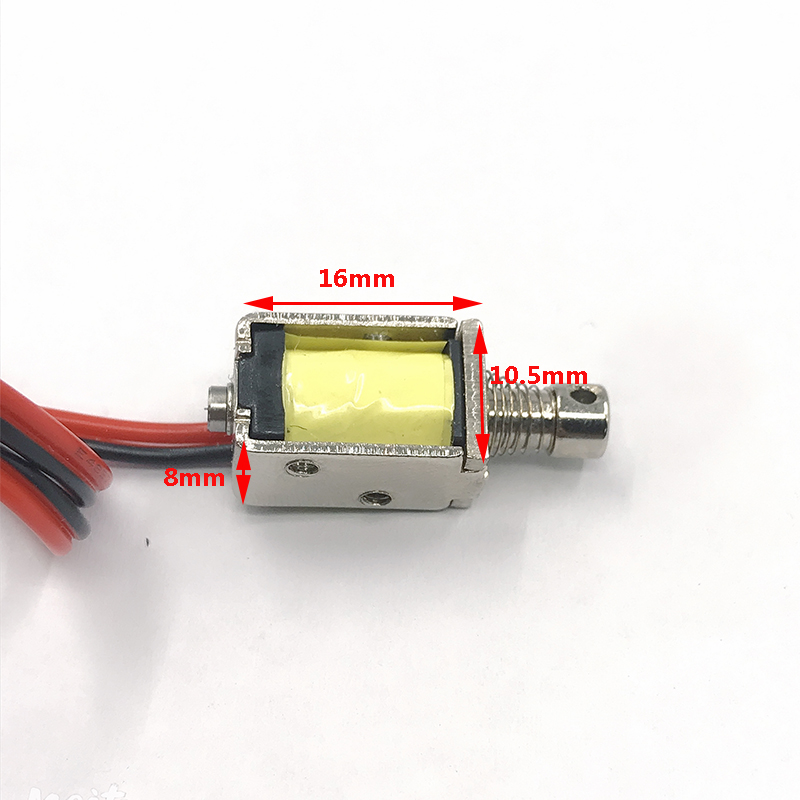
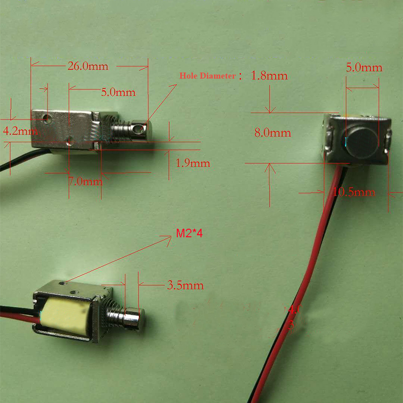
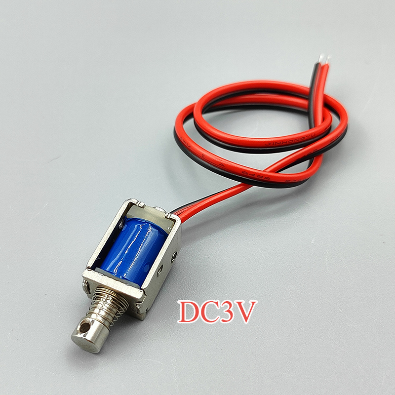
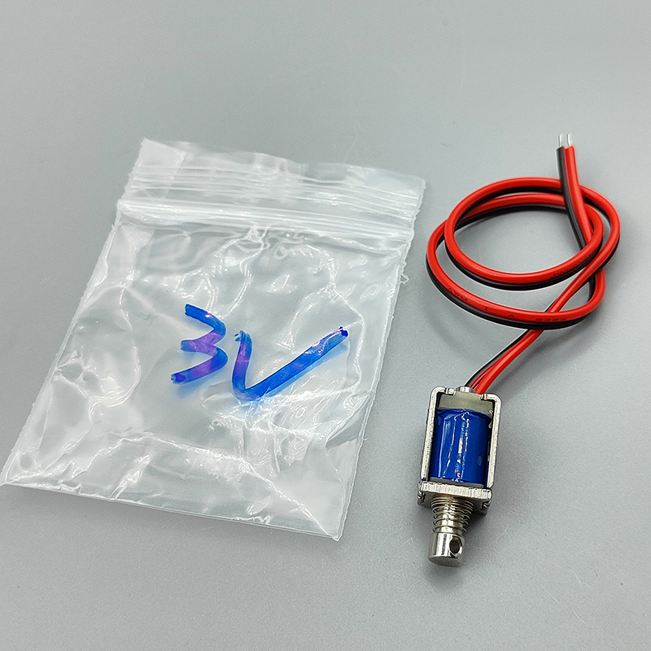
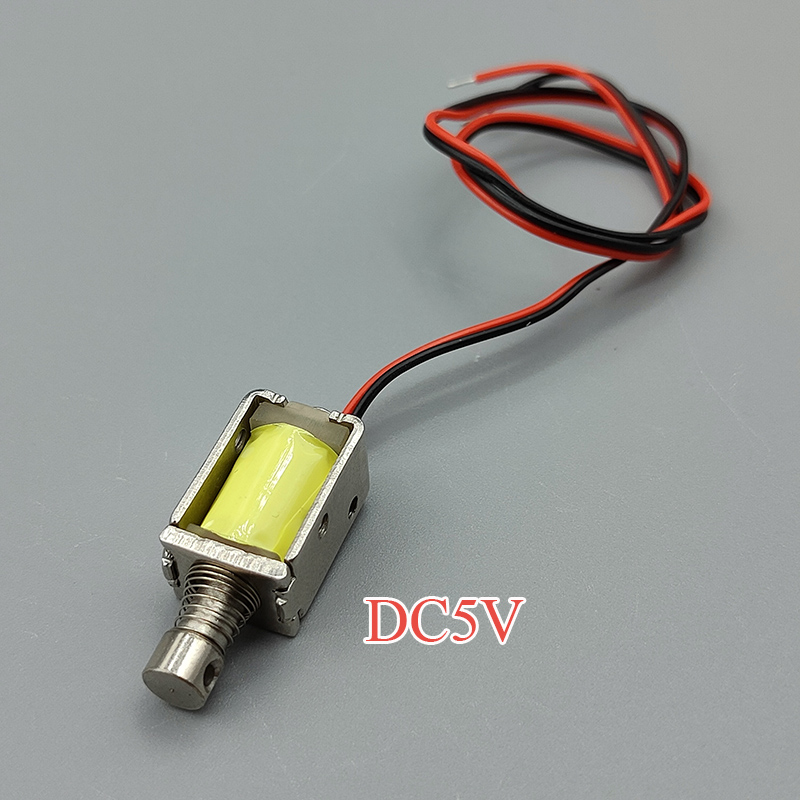
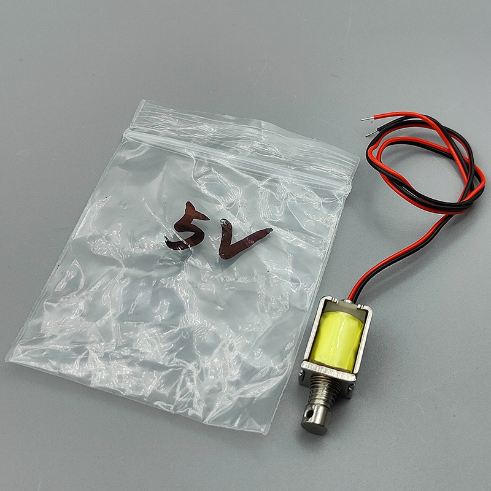
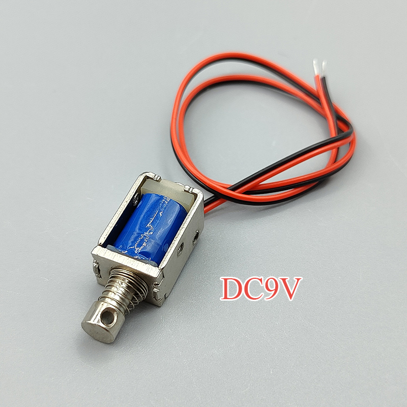
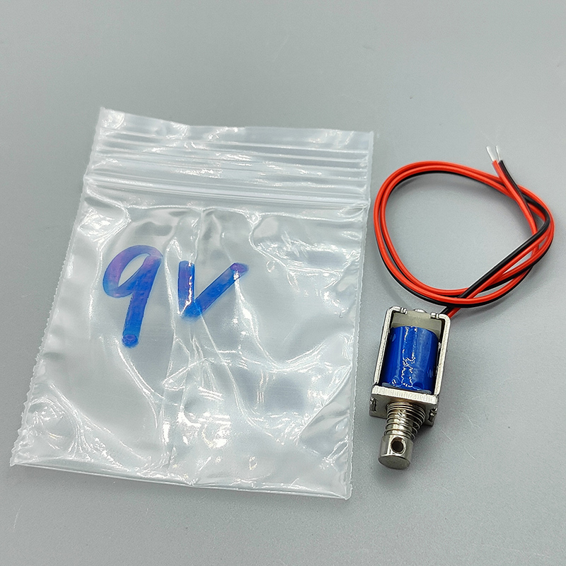
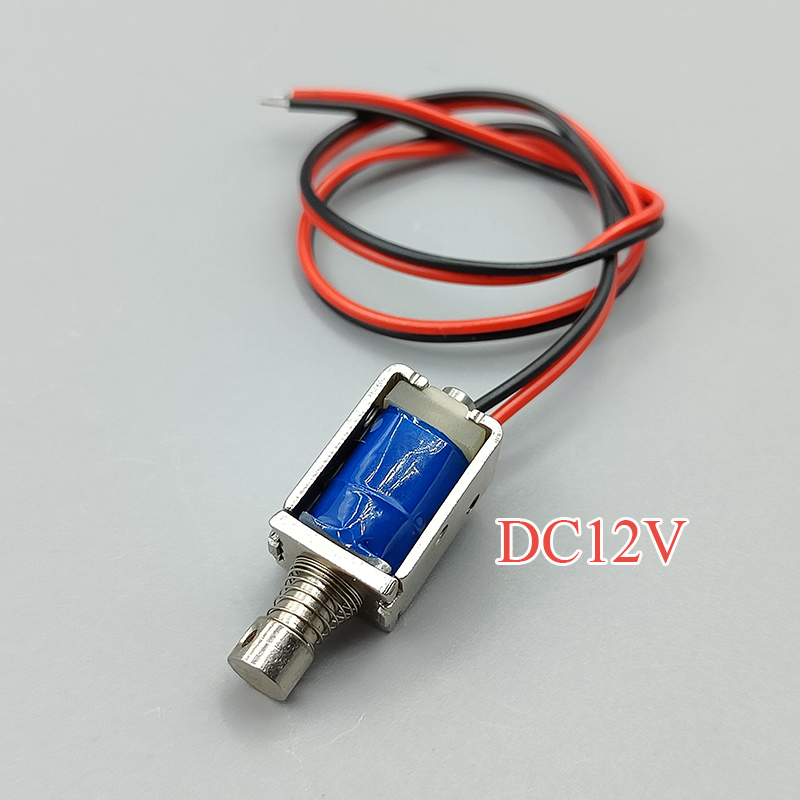
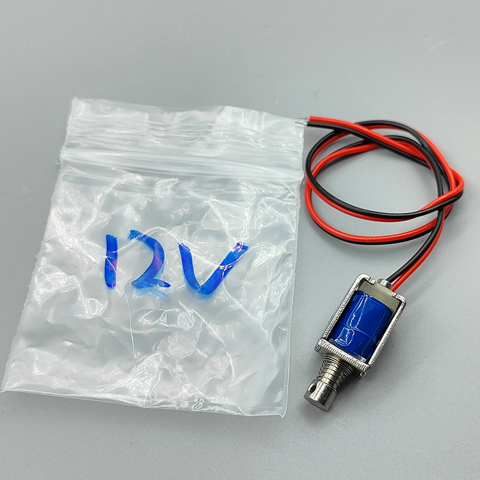

Warning: This product is not suitable for long-term power-on (recommended continuous power-on time is less than 3 seconds)
Tips: This electromagnet has a large working current. Ordinary low-power batteries cannot make it work properly.
Specification:
1. Stroke: about 4mm
2. Weight: 7g
3. Initial thrust (pull force): 0.2N
4. Rated voltage: DC3V ; DC5V ; DC9V ; DC12V
5. Test Current:1.3A(DC3V), 0.7A(DC5V),0.7A(DC9V),0.4A(DC12V)










The scope of application:
1. Amusement
Slot machines, various coin selectors
2. Vending machine
Various vending machines, coin changers, ticket machines
3. Office equipment
List machine, computer equipment, fax machine, punch card machine
Photocopier Typewriter Cash Register Plotter Drinking Machine
4. Transportation equipment
Automatic door locks, safety belt locks, car solenoid valves, parking equipment
5. Home appliances
Recorder, video recorder, electronic organ, automatic knitting machine, accompaniment player
6. Other
Packing machine, manipulator, farming and animal husbandry equipment, stamping equipment, fire protection, anti-theft device, water and electricity saving
Solenoid valve
Characteristics:
1. Easy to fix and connect the load
2. The temperature rise is stable, which can extend the life of the product and ensure good performance
3. The E buckle and rubber gasket make the solenoid valve operate silently
4. Low friction to ensure high efficiency and prolong life
5. Simple and reliable structure design
Operating conditions:
1. Operating temperature: solenoid valve between -5°C and 40°C will not freeze
2. Operating humidity: the solenoid valve will not freeze between 45% and 85% relative humidity
3. Storage temperature: Solenoid valve will not freeze between -40℃ and 75℃
4. Storage humidity: the solenoid valve will not freeze between 0% and 95% relative humidity
Package List:
Mini Solenoid Electromagnetx 1pcs